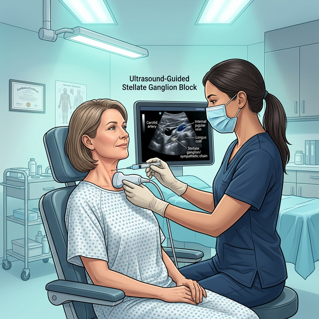

Complex Regional Pain Syndrome (CRPS)
SGB is considered a first-line interventional treatment for CRPS, providing relief from the severe, burning pain that characterizes this debilitating condition.
Anesthesiology & Pain Medicine
Experience world-class interventional pain management with Dr. Rarinthorn Choomsai Na Ayuthaya — fellowship-trained specialist offering cutting-edge Stellate Ganglion Block therapy for lasting relief from chronic pain.

Meet Your Specialist
Anesthesiology & Pain Medicine
With a career dedicated to relieving human suffering, Dr. Rarinthorn stands at the forefront of interventional pain medicine in Thailand. After graduating with First Class Honors in Doctor of Medicine from the prestigious Faculty of Medicine, Chulalongkorn University, she pursued rigorous specialty training in Anesthesiology before dedicating her practice exclusively to the science of pain.
Her pursuit of excellence took her beyond borders — completing a highly competitive Pain Medicine fellowship at ASAN Medical Center in Seoul, South Korea, one of Asia's most renowned medical institutions. This international training equipped her with advanced techniques in nerve blocks, neuromodulation, and ultrasound-guided interventional procedures that few specialists in the region can offer.
Returning to Thailand, Dr. Rarinthorn earned her Clinical Fellowship in Pain Medicine from Chulalongkorn University in 2024, solidifying her position among the nation's foremost pain medicine authorities. Her approach combines cutting-edge medical science with deep empathy — understanding that behind every case of chronic pain is a person whose life, relationships, and dreams have been disrupted.
Featured Treatment
A breakthrough in interventional pain medicine — the Stellate Ganglion Block (SGB) is a minimally invasive procedure that has the power to transform lives by silencing overactive pain signals at their source.
Deep within your neck lies the stellate ganglion — a vital cluster of sympathetic nerves that governs your body's "fight-or-flight" response. When these nerves become overactive due to injury, surgery, inflammation, or trauma, they can amplify pain signals and keep your nervous system locked in a state of distress.
The Stellate Ganglion Block works by delivering a precisely targeted injection of local anesthetic to this nerve cluster under real-time ultrasound guidance. This temporarily calms the overactive nerves, effectively "resetting" the sympathetic nervous system and interrupting the cycle of chronic pain.
The procedure is performed in an outpatient setting, takes approximately 15 to 30 minutes, requires no general anesthesia, and most patients can return home within an hour.

Many patients begin to experience relief within minutes of the procedure. The onset is often rapid and can be profoundly life-changing.
Ultrasound-guided placement ensures the anesthetic reaches exactly the right location, maximizing effectiveness and minimizing risk.
No surgery, no general anesthesia, no incisions. A single injection performed in an outpatient setting with minimal downtime.
Relief can last weeks to months. Repeated treatments often extend the duration of pain relief, building cumulative improvement.
Who Can Benefit
Dr. Rarinthorn's expertise extends across a comprehensive spectrum of chronic pain and nervous system disorders. The Stellate Ganglion Block, combined with her full range of interventional techniques, offers hope for patients who have struggled to find relief through conventional treatments.
SGB is considered a first-line interventional treatment for CRPS, providing relief from the severe, burning pain that characterizes this debilitating condition.
From persistent nerve pain in the head, neck, and upper extremities to post-surgical pain that refuses to subside — targeted nerve blocks can interrupt these relentless signals.
Cervical spondylosis, herniated discs, lumbar spondylosis, and post-surgery spinal pain — treated with epidural procedures, facet injections, and radiofrequency ablation.
Emerging research shows SGB can significantly reduce symptoms of PTSD and chronic anxiety by calming the overactive sympathetic nervous system — offering new hope beyond traditional therapies.
Knee osteoarthritis, rotator cuff injuries, shoulder pain, and fibromyalgia — addressed through PRP injections, intra-articular procedures, and targeted nerve ablation.
For patients enduring cancer-related pain, Dr. Rarinthorn offers compassionate neurolysis procedures and advanced nerve blocks to restore comfort and dignity.
Your Path to Relief
From the moment you reach out, every step is designed to make you feel safe, informed, and cared for. Here is what your journey to lasting relief looks like.
Your journey begins with a thorough one-on-one consultation. Dr. Rarinthorn will take the time to listen to your complete medical history, understand the nature and impact of your pain, review prior treatments, and conduct a detailed examination. Together, you will discuss whether the Stellate Ganglion Block — or another interventional approach — is the right path for you.
Preparation is simple and straightforward. You may be advised to temporarily pause certain medications such as blood thinners. On the day of your procedure, wear comfortable clothing with a loose neckline. No fasting is typically required unless sedation is planned, and the procedure does not require general anesthesia. Please arrange for someone to drive you home afterward.
You will lie comfortably while Dr. Rarinthorn numbs the skin of your neck with a small local anesthetic injection. Using real-time ultrasound guidance, she will precisely navigate a thin needle to your stellate ganglion and deliver the targeted anesthetic. The entire procedure takes approximately 15 to 30 minutes. Most patients describe the experience as surprisingly comfortable.
After the injection, you will rest in a comfortable observation area for approximately 30 minutes. You may notice temporary, harmless effects such as a slightly droopy eyelid, warmth on one side of your face, or mild hoarseness — these are actually positive signs that the nerve block is working. These effects typically resolve within a few hours.
Dr. Rarinthorn personally oversees your follow-up care. She will monitor your progress, assess the degree and duration of your pain relief, and work with you to develop a long-term treatment plan. If additional sessions are beneficial, they can be scheduled to build upon your results, with many patients experiencing progressively longer periods of relief.
Full Range of Expertise
Beyond the Stellate Ganglion Block, Dr. Rarinthorn offers a comprehensive suite of advanced interventional pain procedures, each selected and tailored to your specific condition.
Minimally invasive catheter-based treatment for spinal adhesions and chronic back or leg pain.
Precision heat therapy targeting genicular nerves (knee pain) and medial branches (neck and lower back pain) for lasting relief.
Platelet-Rich Plasma therapy harnessing your body's own healing cells for rotator cuff tears and tendinopathy.
Targeted Botox injections for migraines and neuropathic pain conditions — reducing muscle tension and nerve hyperactivity.
Compassionate nerve destruction procedures providing profound pain relief for patients with cancer-related suffering.
Fluoroscopic-guided facet injections, transforaminal epidural steroid injections, caudal injections, and intra-articular joint injections.
Common Questions
We understand you may have questions about the Stellate Ganglion Block procedure. Here are clear, expert-reviewed answers to help you feel confident and informed.
A Stellate Ganglion Block is a minimally invasive procedure that involves injecting a local anesthetic around the stellate ganglion — a cluster of sympathetic nerves located in the neck. This temporarily blocks overactive pain signals, providing relief for chronic pain conditions such as Complex Regional Pain Syndrome (CRPS), neuropathic pain, and post-surgical pain. It is also increasingly recognized for its benefits in treating PTSD and Long COVID symptoms.
Most patients experience only mild discomfort during the procedure. The skin is first numbed with a local anesthetic to minimize any sensation. The actual injection is performed under real-time ultrasound guidance, ensuring precision and comfort. The entire procedure typically takes just 15 to 30 minutes, and many patients describe it as much more comfortable than they expected.
The Stellate Ganglion Block is used to treat a wide range of conditions including Complex Regional Pain Syndrome (CRPS), chronic neuropathic pain, phantom limb pain, cervical spondylosis-related neck pain, post-surgical pain, PTSD and anxiety, Long COVID symptoms such as brain fog and fatigue, Raynaud's disease, cluster headaches, and certain cases of cancer-related pain.
The duration of pain relief varies depending on the individual and the condition being treated. Many patients experience significant relief lasting weeks to months. A series of treatments can often extend and deepen the relief, with many patients reporting progressively longer periods of improvement with each subsequent session.
Common temporary side effects are actually signs of a successful block. They include a droopy eyelid (ptosis), warm or flushed sensation on the treated side of the face, mild hoarseness, and slight difficulty swallowing. These effects typically resolve within a few hours. Serious complications are extremely rare, especially when the procedure is performed by an experienced specialist like Dr. Rarinthorn using ultrasound guidance.
The procedure is performed exclusively by Dr. Rarinthorn Choomsai Na Ayuthaya, a board-certified Anesthesiology and Pain Medicine specialist. Dr. Rarinthorn holds advanced fellowship training from both Chulalongkorn University and ASAN Medical Center in Seoul, South Korea, and is a member of the Royal College of Anesthesiologists of Thailand and the Thai Association for the Study of Pain. She uses state-of-the-art ultrasound guidance for every procedure.
You have suffered long enough. Dr. Rarinthorn and her team are ready to listen, understand, and create a personalized treatment plan designed to restore your comfort, your mobility, and your life. Reach out today — relief is closer than you think.
Chat with us on LINE for appointment booking